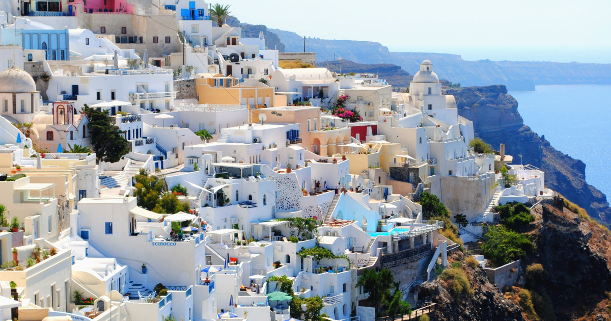

My Holiday Destination

I would like to learn more about Greek Mythology
Visiting the Coliseum has always been an interest of mine
It's near an ocean and I love to swim
I think Santorini looks very aesthetic, and i would like to visit it and do sightseeing
I enjoy flying on airlines and the commute back and forth would be just as fun as the sightseeing